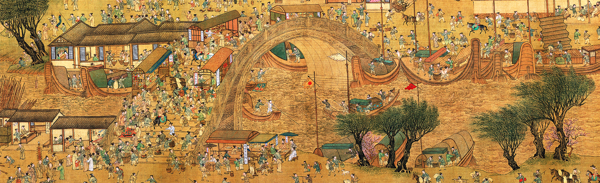

Attributed to Qiu Ying (ca. 1494-1522)
 Next Page
Next Page
There are businesses of all kinds, selling wine, grain, secondhand goods, cookware, bows and arrows, lanterns, musical instruments, gold and silver, ornaments, dyed fabrics, paintings, medicine, needles, and artifacts, as well as many restaurants. The vendors extend all along the great bridge, called the Rainbow Bridge (虹橋, Hong Qiao) or, more rarely, the Shangtu Bridge (上土橋).
TWhere the great bridge crosses the river is the center and main focus of the scroll. A great commotion animates the people on the bridge. A boat approaches at an awkward angle with its mast not completely lowered, threatening to crash into the bridge. The crowds on the bridge and along the riverside are shouting and gesturing toward the boat. Someone near the apex of the bridge lowers a rope to the outstretched arms of the crew below.
Ming Dynasty Imitation by Qiu Ying
In the middle of the Ming dynasty more copies were in circulation. The one that apparently caught the most attention was by the renowned master Qiu Ying, and many painters vied to imitate his version.
This handscroll includes several scenes that differ from the other versions attributed to Qiu Ying, such as the stage performance, willow shooting, acrobatics, tightrope walking, and military review. In terms of the details for the boat race on Lake Jinming, not only are the buildings quite ornate and beautiful, the figural tiles on the eave ridges extend with exaggeration to emphasize the sumptuous and majestic quality of palace architecture. The activities are also unusually raucous, such as the imperial boat race to capture pennants, dance scene, and other past-times.
The bright colouring here likewise differentiates this work from the others, including the plentiful use of mineral blue and green, cinnabar, gamboge, whitewash, and violet to create a strongly decorative and beautiful style for the painting surface. Other details, such as the technique for rendering the water ripples and the formulaic layering of the landscape forms, combine to suggest an illusory feeling to the space. Thus, this painting appears to be a conscious emulation of the Qiu Ying style by a Suzhou workshop artist in the Ming dynasty.